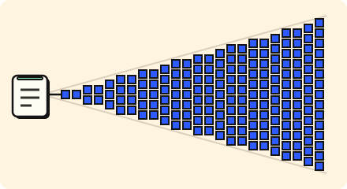

Work later · 3 minutes
One post, millions of feeds
A post by a celebrity must reach millions of feeds; do it in the background.
Open this lesson
Write once, read once, or both
When someone posts, followers must see it. Fan-out on write copies the post into every follower's feed now, so reading is fast. Fan-out on read leaves it alone and builds the feed when someone opens the app. Celebrities with 20 million followers make the first approach very heavy.
A mix
Compare copying a post when it is written with merging it when a feed is opened. A mix can spare large authors the biggest write bursts.
Try the idea
A celebrity post makes 25 times the writes. Absorb it with a queue and workers.
Key numbers
- Average account
- ≈ 200 followers. approx.
- Celebrity account
- ≈ 20 million followers. approx.
- One post by a celebrity
- ≈ 20 million copies. if written to every feed
Check your reasoning
Think through these questions before opening the lesson. In the game you can test the idea and compare your reasoning.
- Fan-out on write makes:
- Why queue the copying?
- How do big feeds treat celebrities?
The key point
Do heavy fan-out in the background, and treat huge accounts differently.
Practise this idea
- Hard
Live streaming
Streamers broadcast live and thousands watch together, with a chat on the side. Everyone wants the same piece of video at the same second, so nothing can be saved for later. When a big streamer goes live, the whole audience arrives at once.
- Hard
Social feed
Every person opens the app and sees a feed of posts from the people they follow. Most people have a few hundred followers, but a few have millions, and when they post, millions of feeds must change. The feed must be fast and your own post must show up at once.
- Hard
Group chat and presence
Teams talk in channels with many people. Everyone sees messages in the same order, sees who is online and who is typing, and gets notified when mentioned. At nine every morning thousands of workplaces start at once, and one announcement can reach a channel of tens of thousands.